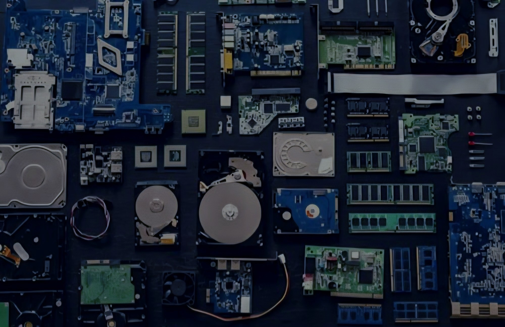
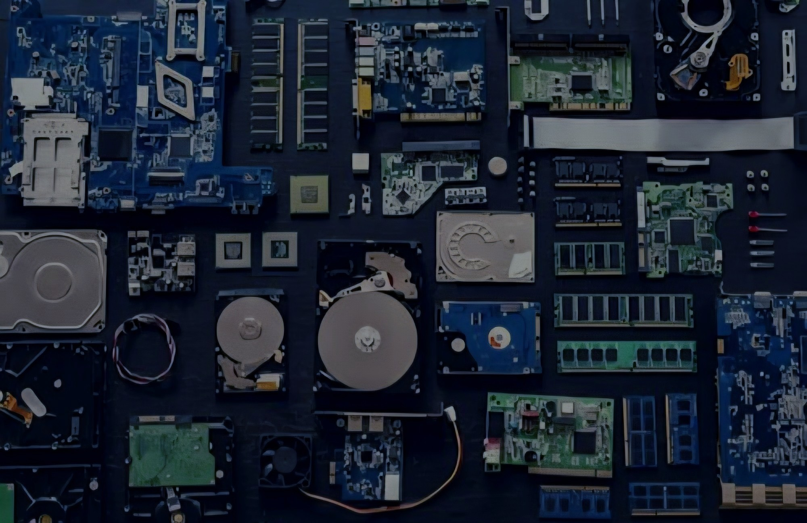

- Зависимость
На данный момент множество сервисов сильно зависят от технологий, а некоторые даже не смогут существовать без них.
- Киберугрозы
Существует множество мошеннических схем, которые действуют именно в интернете. Также широко распространяются вирусы, которые способны получить полный контроль над операционной системой устройства.
- Информационная перегрузка
Объём информации в интернете с каждым днём становится всё больше, из-за чего человек может не успевать её полноценно воспринимать.
- Экологические последствия
Создание новых технологий использует много природных ресурсов, что может оказывать огромное влияние на экологию. Также постепенно накапливаются электронные отходы, которые быстро растут из-за неправильной утилизации электроники.
Современные технологии имеют не только положительное влияние на нашу жизнь, но также могут и вредить нам. Множество людей сегодня зависимы от своих устройств и даже не представляют свою жизнь без них. Производство технологий, которое обрело масштабные размеры, сильно влияет на экологию из-за огромной траты природных ресурсов.

 
